foodcare cle
Promotion contents
Photo
UX Writing
2021
A more enhanced brand experience.
foodcare cle Promotion contents.
foodcare cle Promotion contents.
푸드케어는 건강한 음식을 안전하게 만드는 식품 기업으로, 유아식,
유아용품 토탈케어 브랜드 ‘클레(Cle)’를 운영하고 있습니다. 자사
웹사이트 리뉴얼에 맞춰
제품의 특성과 강점을 드러낼 수 있는 프로모션 콘텐츠를 기획, 제작하여 브랜드 경쟁력을 높이고자 하였습니다.
제품의 특성과 강점을 드러낼 수 있는 프로모션 콘텐츠를 기획, 제작하여 브랜드 경쟁력을 높이고자 하였습니다.

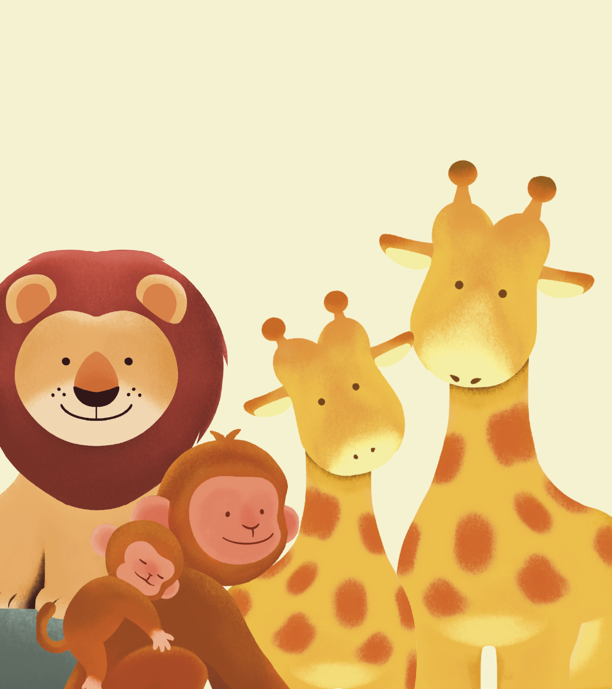
project goal
We plan and produce
all information through
the renewed website to complete
FoodCare cle unique brand.
all information through
the renewed website to complete
FoodCare cle unique brand.
리뉴얼 버전 웹사이트를 위한 모든 콘텐츠를 기획 및 제작하여
푸드케어, 클레만의 고유한 브랜드를 완성합니다.
푸드케어, 클레만의 고유한 브랜드를 완성합니다.
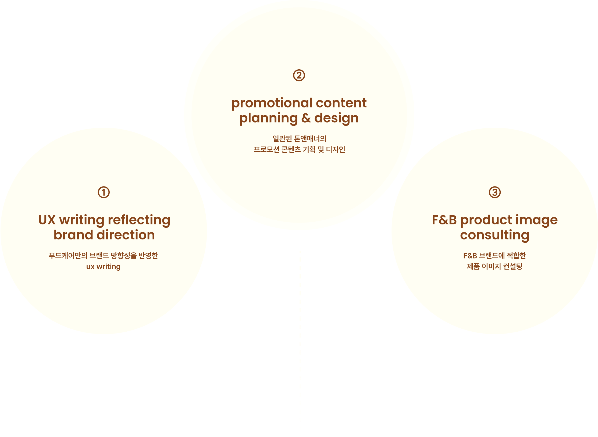
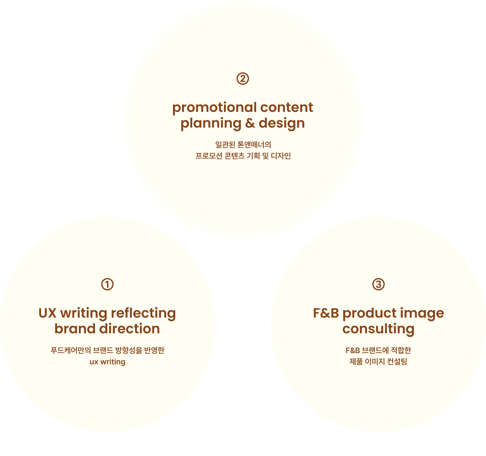
main ux solution
UX
SOLUTION
UX Problem
UX Solution
제품 경쟁력이
강조되지 않는 콘텐츠
강조되지 않는 콘텐츠
친환경 유리용기, 유기농 재료 사용 등
푸드케어만의 제품 경쟁력을
확실하게 드러낼 수 있는 콘텐츠를 기획합니다.
푸드케어만의 제품 경쟁력을
확실하게 드러낼 수 있는 콘텐츠를 기획합니다.
UX Problem
UX Solution
일관된 톤앤매너가 적용된
콘텐츠 디자인
콘텐츠 디자인
자사 커머스 앱 내의 다양한 경험 접점에
일관된 디자인을 적용하여
통합적인 브랜드 경험을 제공합니다.
일관된 디자인을 적용하여
통합적인 브랜드 경험을 제공합니다.
UX Problem
UX Solution
브랜드 가치를 강화하는
커뮤니케이션 매너
커뮤니케이션 매너
고객에게 친밀감과 신뢰감을 동시에 제공하여
브랜드 만족도를 높일 수 있는
커뮤니케이션 매너를 정립합니다.
브랜드 만족도를 높일 수 있는
커뮤니케이션 매너를 정립합니다.

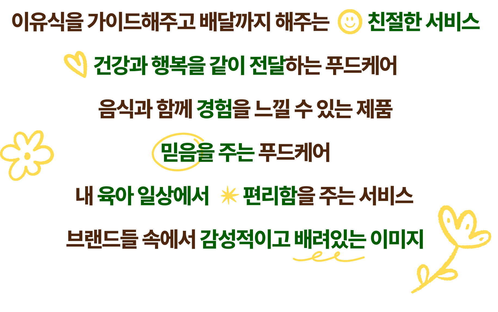
Contents delivery
smart
kind
Reliable
look & feel
Careful
Life-enhancing
Considerate
UX
writing
식품회사 푸드케어와 푸드케어 브랜드 클레의 비전 및 타겟을
구분하여
각각의 타겟에 맞는 보이스 톤을 정의하고, UX writing 가이드를 구축하여
전체적인 콘텐츠 기획에 일관되게 적용합니다.
각각의 타겟에 맞는 보이스 톤을 정의하고, UX writing 가이드를 구축하여
전체적인 콘텐츠 기획에 일관되게 적용합니다.

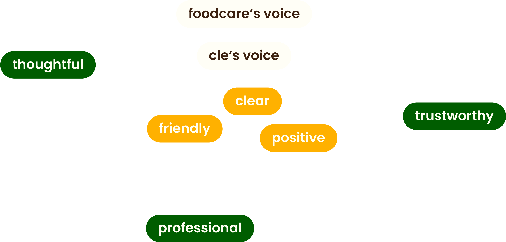
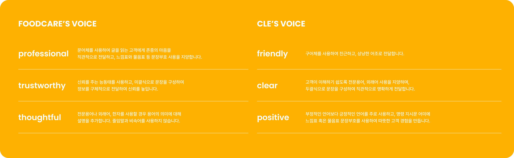
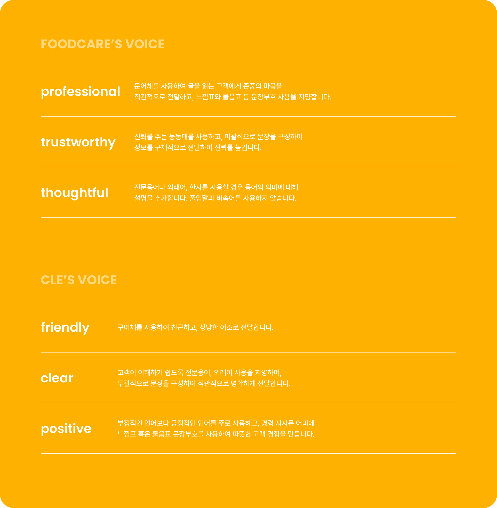
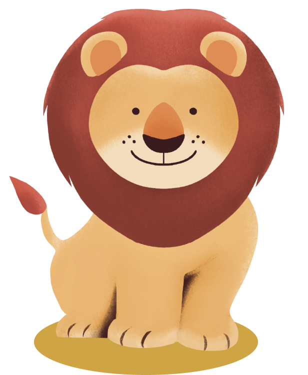
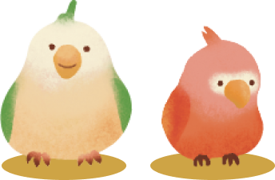
contents design
회사소개, 브랜드스토리, 제품상세소개, 매거진, 배너 등 푸드케어
클레에 필요한
모든 디자인 콘텐츠를 기획 및 디자인하였습니다.
모든 디자인 콘텐츠를 기획 및 디자인하였습니다.
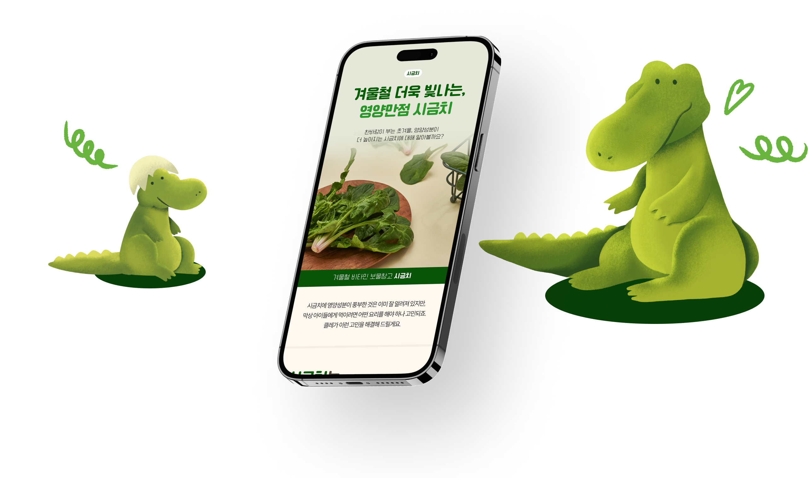
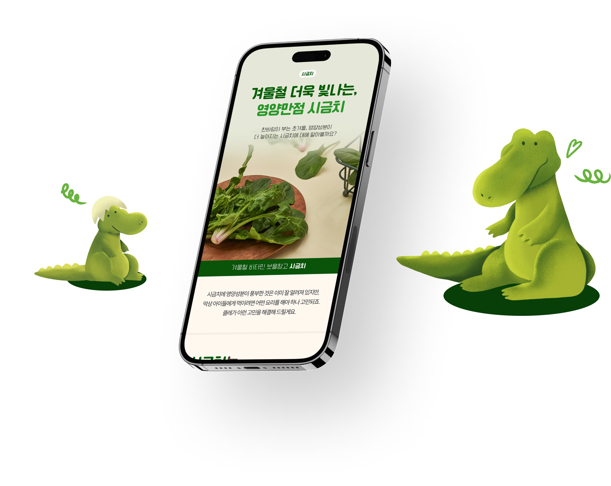

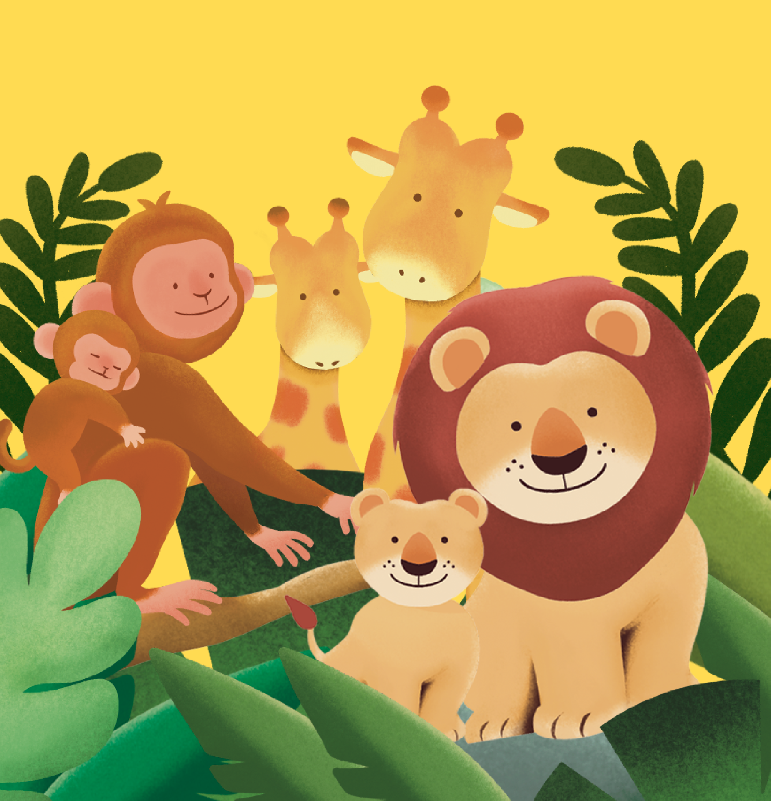
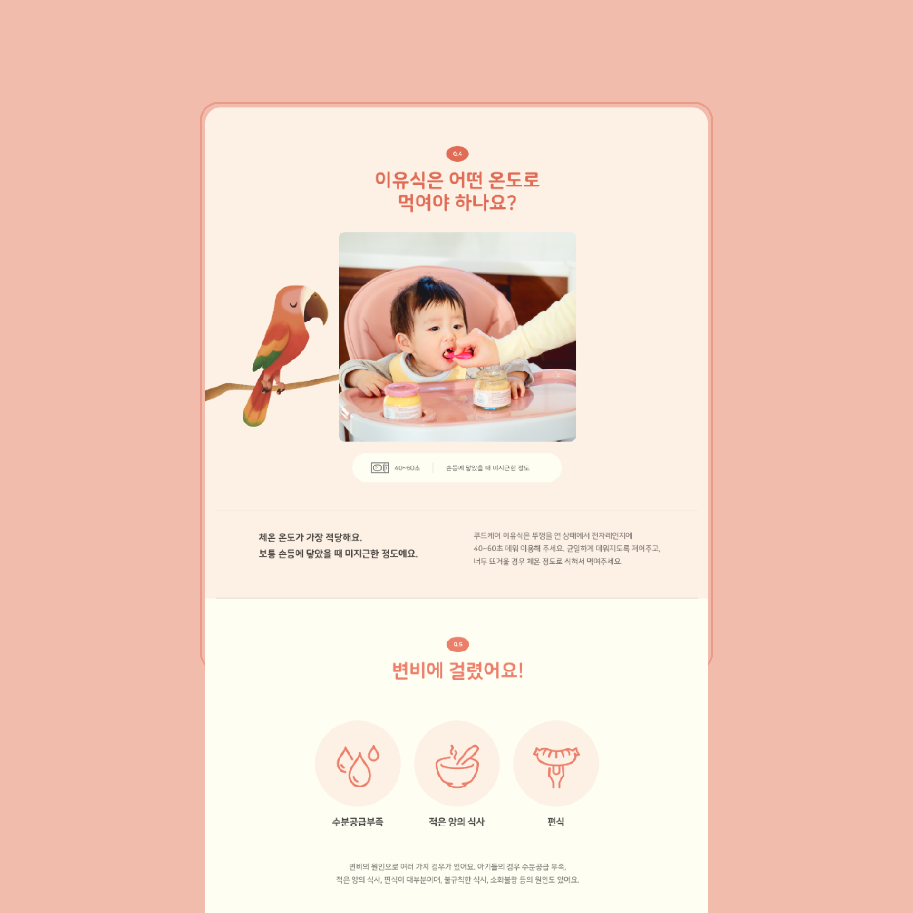
photography
모든 콘텐츠에 사용되는 컨셉 사진과 제품 사진 촬영을
진행했습니다.
브랜드 이미지의 경우, 유아 식품 브랜드에 맞는 밝고 가족적인 이미지를
연출하였으며 식품의 제형과 식감을 효과적으로 전달할 수 있도록
푸드스타일링을 더해 촬영하였습니다.
브랜드 이미지의 경우, 유아 식품 브랜드에 맞는 밝고 가족적인 이미지를
연출하였으며 식품의 제형과 식감을 효과적으로 전달할 수 있도록
푸드스타일링을 더해 촬영하였습니다.